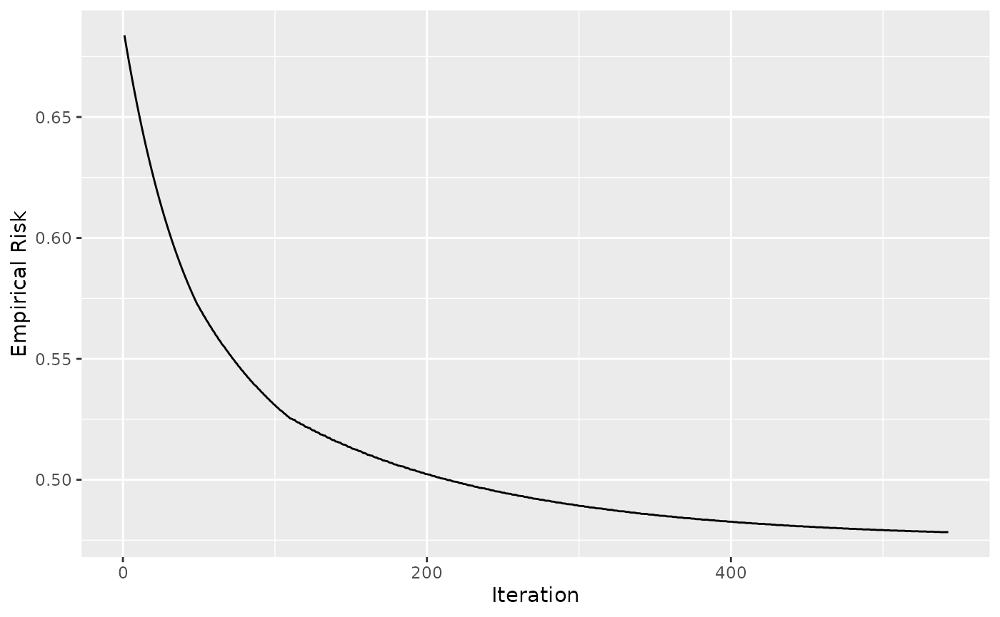
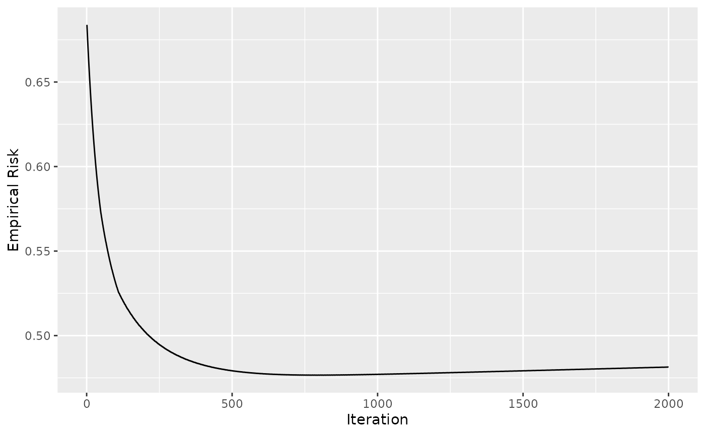
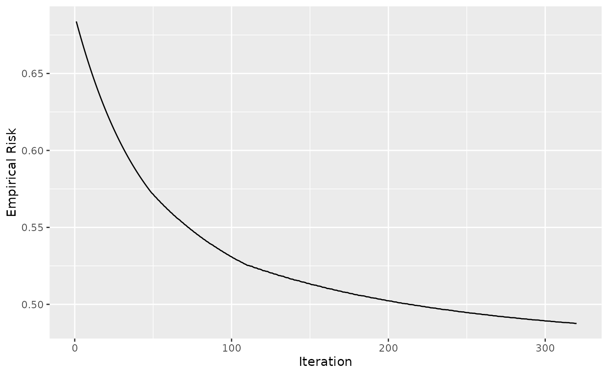

Early Stopping
basic-early-stopping.RmdBefore Starting
- Read the use-case
to get to know how to define a
Compboostobject using theR6interface
Data: Titanic Passenger Survival Data Set
We use the titanic
dataset with binary classification on Survived. First
of all we store the train and test data into two data frames and remove
all rows that contains missing values (NAs):
# Store train and test data:
df = na.omit(titanic::titanic_train)
df$Survived = factor(df$Survived, labels = c("no", "yes"))For the later stopping we split the dataset into train and test:
Defining the Model
We define the same model as in the use-case but just on the train index without specifying an out-of-bag fraction:
cboost = Compboost$new(data = df[idx_train, ], target = "Survived")
cboost$addBaselearner("Age", "spline", BaselearnerPSpline)
cboost$addBaselearner("Fare", "spline", BaselearnerPSpline)
cboost$addBaselearner("Sex", "ridge", BaselearnerCategoricalRidge)Early Stopping in Compboost
How does it work?
The early stopping of compboost is done by using logger
objects. Logger are executed after each iteration and stores class
dependent data such as the runtime or risk. Additionally, each logger
can be declared as a stopper by setting
use_as_stopper = TRUE. By declaring a logger as stopper, it
is used to stop the algorithm after a logger-specific criteria is
reached. For example, the LoggerTime will stop the
algorithm after a pre-defined runtime is reached.
Example with runtime stopping
Now it is time to define a logger to track the runtime. As mentioned
above, we set use_as_stopper = TRUE. By setting the
max_time we define how long we want to train the model,
here 50000 microseconds:
cboost$addLogger(logger = LoggerTime, use_as_stopper = TRUE, logger_id = "time",
max_time = 50000, time_unit = "microseconds")
cboost$train(2000, trace = 250)
#> 1/2000 risk = 0.67 time = 0
#> 250/2000 risk = 0.5 time = 20720
#> 500/2000 risk = 0.48 time = 43694
#>
#>
#> Train 561 iterations in 0 Seconds.
#> Final risk based on the train set: 0.48
cboost
#>
#>
#> Component-Wise Gradient Boosting
#>
#> Target variable: Survived
#> Number of base-learners: 3
#> Learning rate: 0.05
#> Iterations: 561
#>
#> Offset: 0.423
#>
#> LossBinomial: L(y,x) = log(1 + exp(-2yf(x))As we can see, the fittings is stopped early after 561 and does not
train the full 2000 iterations. The logger data can be accessed by
calling $getLoggerData():
tail(cboost$getLoggerData())
#> _iterations time baselearner train_risk
#> 557 556 49525 Fare_spline 0.4800001
#> 558 557 49624 Age_spline 0.4799742
#> 559 558 49716 Sex_ridge 0.4799373
#> 560 559 49816 Fare_spline 0.4799057
#> 561 560 49914 Age_spline 0.4798799
#> 562 561 50013 Age_spline 0.4798544Loss-Based Early Stopping
In machine learning, we often like to stop at the best model performance. We need either tuning or early stopping to determine what is a good number of iterations \(m\). A well-known procedure is to log the out-of-bag (oob) behavior of the model and stop after the model performance starts to get worse. The required parameters for the logger are
the loss \(L\) that is used for stopping: \[\mathcal{R}_{\text{emp}}^{[m]} = \frac{1}{n}\sum_{i=1}^n L\left(y^{(i)}, f^{[m]}(x^{(i)})\right)\]
the percentage of performance increase as lower boundary for the increase: \[\text{err}^{[m]} = \frac{\mathcal{R}_{\text{emp}}^{[m- 1]} - \mathcal{R}_{\text{emp}}^{[m]}}{\mathcal{R}_{\text{emp}}^{[m - 1]}}\]
Define the risk logger
Since we are interested in the oob behavior, it is necessary to
prepare the oob data and response for compboost. Therefore,
it is possible to use the $prepareResponse() and
$prepareData() member functions to create suitable
objects:
oob_response = cboost$prepareResponse(df$Survived[idx_test])
oob_data = cboost$prepareData(df[idx_test,])With these objects we can add the oob risk logger, declare it as stopper, and train the model:
cboost$addLogger(logger = LoggerOobRisk, use_as_stopper = TRUE, logger_id = "oob",
used_loss = LossBinomial$new(), eps_for_break = 0, patience = 5, oob_data = oob_data,
oob_response = oob_response)
cboost$train(2000, trace = 250)
#> 1/2000 risk = 0.67 oob = 0.68
#> 250/2000 risk = 0.5 oob = 0.49
#> 500/2000 risk = 0.48 oob = 0.48
#>
#>
#> Train 543 iterations in 0 Seconds.
#> Final risk based on the train set: 0.48Note: The use of eps_for_break = 0 is a
hard constrain to stop the training until the oob risk starts to
increase.
Taking a look at the logger data tells us that we stopped exactly after the first five differences are bigger than zero (the oob risk of these iterations is bigger than the previous ones):
tail(cboost$getLoggerData(), n = 10)
#> _iterations oob baselearner train_risk
#> 535 534 0.4784209 Sex_ridge 0.4806872
#> 536 535 0.4784327 Age_spline 0.4806586
#> 537 536 0.4784332 Fare_spline 0.4806242
#> 538 537 0.4784450 Age_spline 0.4805959
#> 539 538 0.4783287 Sex_ridge 0.4805564
#> 540 539 0.4783405 Age_spline 0.4805284
#> 541 540 0.4783415 Fare_spline 0.4804943
#> 542 541 0.4783534 Age_spline 0.4804666
#> 543 542 0.4783547 Fare_spline 0.4804330
#> 544 543 0.4783665 Age_spline 0.4804054
diff(tail(cboost$getLoggerData()$oob, n = 10))
#> [1] 1.180302e-05 5.400260e-07 1.179882e-05 -1.163699e-04 1.187324e-05
#> [6] 9.532968e-07 1.186647e-05 1.321357e-06 1.185917e-05
library(ggplot2)
ggplot(data = cboost$getLoggerData(), aes(x = `_iterations`, y = oob)) +
geom_line() +
xlab("Iteration") +
ylab("Empirical Risk")
#> Warning: Removed 1 row containing missing values (`geom_line()`).
Taking a look at 2000 iterations shows that we have stopped quite good:
cboost$train(2000, trace = 0)
#>
#> You have already trained 543 iterations.
#> Train 1457 additional iterations.
ggplot(data = cboost$getLoggerData(), aes(x = `_iterations`, y = oob)) +
geom_line() +
xlab("Iteration") +
ylab("Empirical Risk")
#> Warning: Removed 1 row containing missing values (`geom_line()`).
Note: It can happen that the model’s oob behavior increases locally for a few iterations and then starts to decrease again. To capture this, we need the “patience” parameter which waits for, let’s say, 5 iterations and stops the algorithm only if the improvement in all 5 iterations is smaller than our criteria. Setting this parameter to one can lead to unstable results:
df = na.omit(titanic::titanic_train)
df$Survived = factor(df$Survived, labels = c("no", "yes"))
set.seed(123)
idx_train = sample(seq_len(nrow(df)), size = nrow(df) * 0.8)
idx_test = setdiff(seq_len(nrow(df)), idx_train)
cboost = Compboost$new(data = df[idx_train, ], target = "Survived", loss = LossBinomial$new())
cboost$addBaselearner("Age", "spline", BaselearnerPSpline)
cboost$addBaselearner("Fare", "spline", BaselearnerPSpline)
cboost$addBaselearner("Sex", "ridge", BaselearnerCategoricalRidge)
oob_response = cboost$prepareResponse(df$Survived[idx_test])
oob_data = cboost$prepareData(df[idx_test,])
cboost$addLogger(logger = LoggerOobRisk, use_as_stopper = TRUE, logger_id = "oob",
used_loss = LossBinomial$new(), eps_for_break = 0, patience = 1, oob_data = oob_data,
oob_response = oob_response)
cboost$train(2000, trace = 0)
#> Train 320 iterations in 0 Seconds.
#> Final risk based on the train set: 0.49
library(ggplot2)
ggplot(data = cboost$getLoggerData(), aes(x = `_iterations`, y = oob)) +
geom_line() +
xlab("Iteration") +
ylab("Empirical Risk")
#> Warning: Removed 1 row containing missing values (`geom_line()`).
Some remarks
- Early stopping can be done globally or locally:
- locally (any): The algorithm stops after the first stopping criteria of a logger is reached
- globally (all): The algorithm stops after all stopping criteria are reached
- Some arguments are ignored if the logger is not set as stopper,
e.g.
max_timefrom the time logger - The logger functionality is summarized here